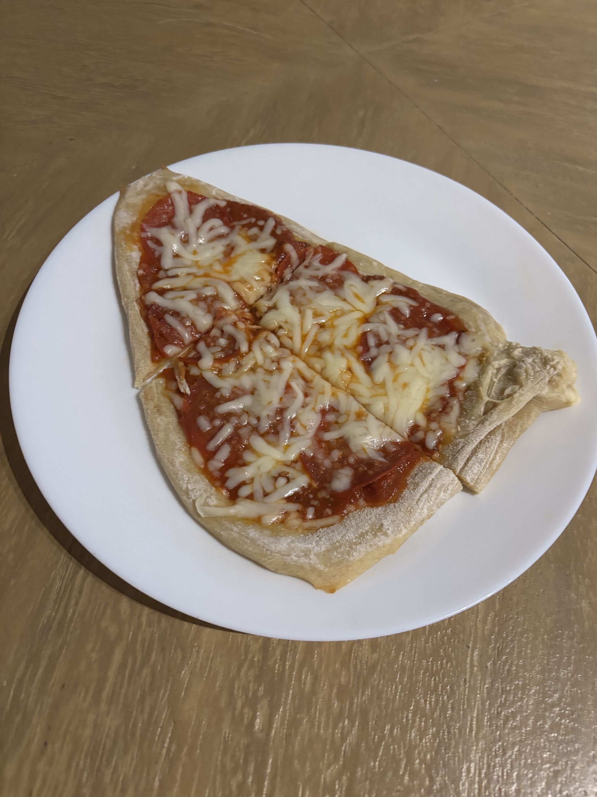

This pizza recipe is relatively new as it was first made in 2021. "It's leagues better then store bought pizza." My Sister says. I've selected this recipe because when we have homemade pizza for dinner it always makes a bad day better!

Tips, tricks, and substitutions
- Making this recipe on a grill upgrades the flavor.
- You can use any sauce or toppings you want.
- Kneading the dough before the can ruin the pizza.
Ingredients(amount can vary depending on pizza size)
| Ingredient | Amount |
|---|---|
| Trader Joes plain pizza dough | 1 bag |
| Pizza sauce | 6 tablespoons |
| Pepperoni | 15 slices |
| Shredded mozzarella cheese | 1.5 cups |
| Flour | 2 tablespoons |
Step by step
- Flour a surface and set the dough out for 20 minutes.
- After 20 minutes, roll the dough out into a circle. Be sure the dough isn't less than 1/4 inch thick.
- Transfer the dough to a baking sheet.
- Spread the pizza sauce on the dough, keeping a 1/4 inch edge without sauce.
- Layer the pepperoni individually ontop of the sauce, covering the pizza.
- Spread the cheese across the top of the pepperoni, covering the pizza.
- Bake the pizza at 450 degrees for 10 - 12 minutes.
- Take out of the oven, cut, and enjoy your oven-baked pepperoni pizza!
Serving size:1 slice(8 servings)
Preparation time:35-40 minutes